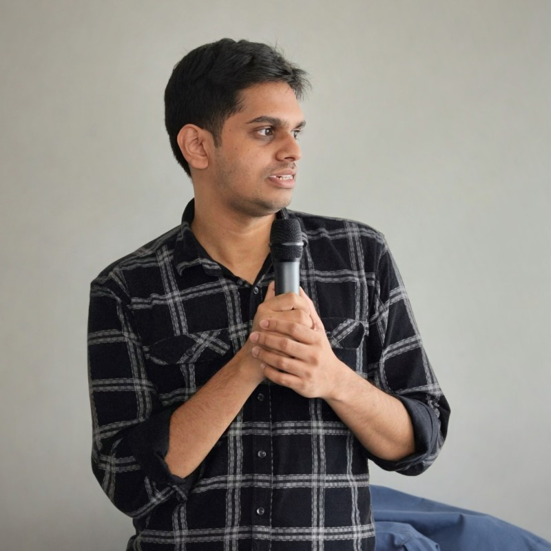

I'm a ISTQB certified Test Automation Engineer with hands on experience across Web, API and Mobile platforms, specialising in designing robust, scalable automation frameworks using modern open source tools. I continuously explore new tools and practices to push the boundaries of what's possible in modern QA.

Starting as an intern in 2019, I quickly learned the bugs that mattered most weren't in tickets. They lived in requirement gaps, flaky pipelines and the quiet places where teams stopped asking "but what if?"
Seven years on, I lead test the automation efforts at VitalHub Innovations Lab, building reusable frameworks across Selenide, Playwright, Cypress and REST Assured, and designing AWS native performance harnesses running hundreds of concurrent browser sessions on Fargate.
But the work I’m most proud of isn’t the code. It’s shortening release cycles, mentoring junior engineers into confident automation owners, and embedding accessibility checks directly into pipelines making quality impossible to bypass.
Looking ahead, I'm exploring how AI and intelligent tools can cut time on repetitive tasks and raise quality standards further. To me, quality isn't a phase, it's a posture.